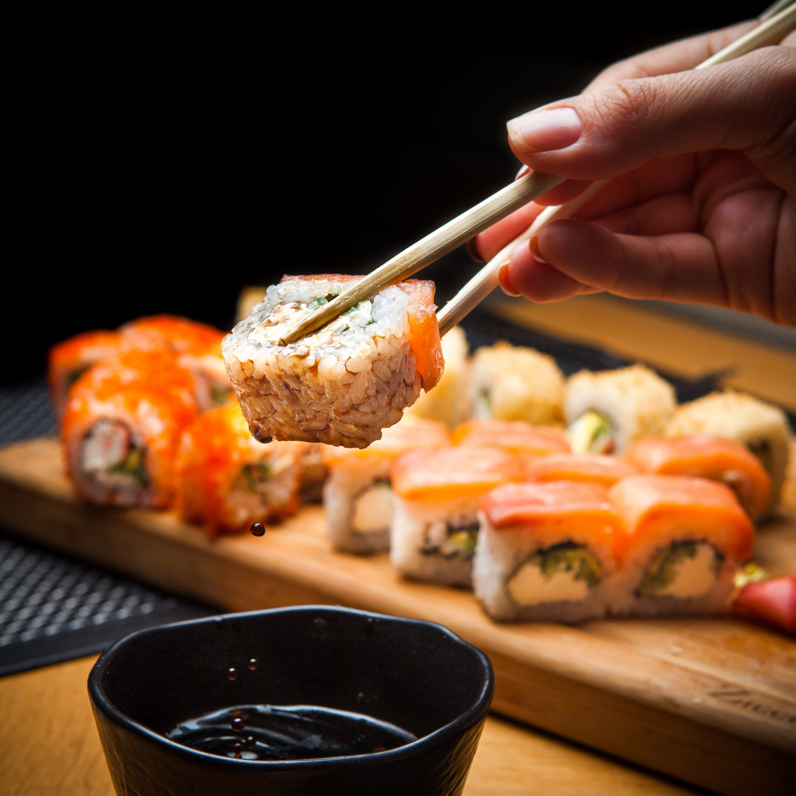

Pasta Italiana

Ensalada
Shushi

Tarta de 3 Chocolates
Pasta Italiana
Ingredientes para 2 personas:
- 100-150 g de pasta (espaguetis, penne, o tu elección)
- 1 cucharada de aceite de oliva
- 1 diente de ajo, picado
- 200 g de tomate triturado (puede ser enlatado)
- Sal al gusto
- Pimienta al gusto
- Albahaca fresca (opcional)
- Queso parmesano rallado (opcional)
Proceso de Creación:
Cocinar la Pasta: En una olla grande, hierve agua con sal. Agrega la pasta y cocina según las instrucciones del paquete hasta que esté al dente. Luego, escúrrela y reserva un poco del agua de cocción.
Preparar la Salsa: En una sartén grande, calienta el aceite de oliva a fuego medio. Agrega el ajo picado y sofríe durante 1-2 minutos hasta que esté dorado.
Agregar Tomate: Incorpora el tomate triturado a la sartén. Cocina a fuego lento durante unos 10-15 minutos, removiendo ocasionalmente. Agrega sal y pimienta al gusto.
Mezclar la Pasta y la Salsa: Añade la pasta cocida a la sartén con la salsa. Si la salsa está muy espesa, puedes añadir un poco del agua de cocción reservada para aligerarla. Mezcla bien para que la pasta se cubra con la salsa.
Servir: Sirve la pasta caliente, decorada con albahaca fresca y espolvoreada con queso parmesano rallado si lo deseas.
Ensalada Saludable
Ingredientes para 2 personas:
- Lechuga fresca (2-3 hojas)
- Tomate cherry (1 taza)
- Pepino (1/2)
- Cebolla roja (1/4)
- Queso feta (100g)
- Aderezo de vinagreta (2-3 cucharadas)
- Aceitunas negras (1/4 taza)
- Pimiento rojo (1/2)
Proceso de Creación:
Preparación de la Ensalada:
Lavar y cortar los ingredientes Lava las hojas de lechuga, el tomate cherry, el pepino y la cebolla roja. Corta todos los ingredientes en trozos pequeños y colócalos en un tazón grande.
Preparar el aderezo En un tazón pequeño, mezcla el aderezo de vinagreta con un poco de aceite de oliva y vinagre. Añade sal y pimienta al gusto.
Mezclar la ensalada Vierte el aderezo sobre la ensalada y mezcla bien todos los ingredientes. Asegúrate de que todos los ingredientes estén bien cubiertos con el aderezo.
Agregar los ingredientes finales Agrega las aceitunas negras y el queso feta a la ensalada. Mezcla bien para que todos los ingredientes estén bien distribuidos.
Servir Sirve la ensalada fresca y lista para disfrutar. Puedes decorarla con un poco de pimiento rojo picado para darle un toque de color.
Shushi
Ingredientes para 2 personas:
- Arroz japonés (1 taza)
- Nori (algas secas) (4-6 hojas)
- Atún fresco (120g)
- Salmon fresco (120g)
- Calabacín (1/2)
- Pimiento rojo (1/2)
- Cebolla verde (1/4)
- Wasabi (1 cucharadita)
- Jengibre (1 cucharadita)
- Vinagre de arroz (2 cucharadas)
- Aceite de sésamo (1 cucharada)
Proceso de Creación:
Preparación del Sushi:
Paso 1: Preparar el arroz japonés Lava el arroz japonés y cocina según las instrucciones del paquete. Deja enfriar.
Paso 2: Preparar el nori Corta las hojas de nori en trozos pequeños y colócalos en un tazón.
Paso 3: Preparar los ingredientes Corta el atún fresco, el salmón fresco, el calabacín, el pimiento rojo y la cebolla verde en trozos pequeños.
Paso 4: Armar el sushi Coloca una hoja de nori en una superficie plana y unta una capa fina de arroz japonés en el centro de la hoja. Agrega los ingredientes en el centro del arroz y enrolla el sushi utilizando un rodillo de sushi.
Paso 5: Cortar el sushi Corta el sushi en rodajas finas utilizando un cuchillo afilado.
Paso 6: Servir Sirve el sushi con wasabi, jengibre y vinagre de arroz. Decora con aceite de sésamo y cebolla verde picada.
Tarta de 3 chocolates
Ingredientes para la tarta:
- 200g de chocolate negro (70% cacao)
- 150g de chocolate con leche
- 100g de chocolate blanco
- 1 taza de azúcar granulada
- 1/2 taza de harina de trigo
- 1/2 cucharadita de polvo de hornear
- 1/4 cucharadita de sal
- 1/2 taza de mantequilla derretida
- 2 huevos grandes
- 1 cucharadita de extracto de vainilla
Proceso de Creación:
Para hacer una tarta de 3 chocolates, sigue estos pasos:
Paso 1: Preparar la base de la tarta Precalienta el horno a 180°C. En un tazón grande, mezcla la harina de trigo, el polvo de hornear y la sal. Agrega la mantequilla derretida y mezcla hasta que se forme una masa homogénea.
Paso 2: Preparar el relleno de chocolate En un tazón separado, derrite el chocolate negro, el chocolate con leche y el chocolate blanco en el microondas o en una olla a baño maría. Deja enfriar ligeramente.
Paso 3: Mezclar el relleno de chocolate con los huevos En un tazón grande, bate los huevos y el azúcar granulada hasta que estén espumosos. Agrega el extracto de vainilla y mezcla bien. Incorpora el relleno de chocolate derretido y mezcla hasta que esté bien combinado.
Paso 4: Verter la mezcla en la base de la tarta Vierte la mezcla de chocolate en la base de la tarta preparada en el paso 1. Alisa la superficie con una espátula.
Paso 5: Hornear la tarta Hornea la tarta durante 35-40 minutos, o hasta que esté firme al tacto y un cuchillo insertado en el centro salga limpio. Deja enfriar completamente antes de servir.